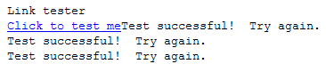
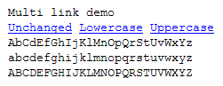
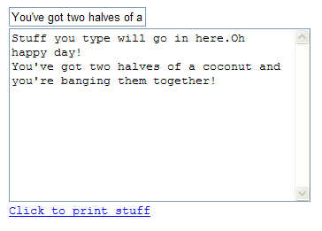
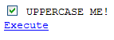
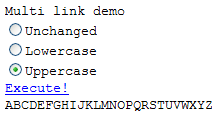
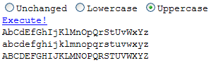
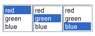
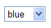

Lesson Four - Using Web Widgets
Copyright 2007 Shoptalk Systems
All Rights Reserved
In this lesson we will get you started with adding widgets to your Run BASIC programs. You can add links, fields, graphics and more and we'll show you how.
Links
Text Widgets
Checkboxes
Radiobuttons
Listboxes and Dropdown Lists
The Web Page
This is a good time to point out that since our programs run in a web browser that the things we learn in this lesson pertain to laying things out on a web page. Most other programming languages deal with windows (with a lowercase w) where you have very fine control over what you can display and where you can display it. A web page on the other hand displays them by "flowing" them. Things are added starting at the top of the page and they flow from left to right and then down the page, like handwritten or printed text.
What could possibly define the user interface of the world wide web more than the humble link? Let's start with that. Adding links to a Run BASIC program is very easy. Look at this example program:
print "Link tester"
link #testIt, "Click to test me", [linkAction]
wait
[linkAction]
print "Test successful! Try again."
wait
Here's what the program looks like when you run it:

First notice the LINK statement. After we print "Link tester" to the screen, the LINK statement will cause a link to appear underneath it. The link will have the text Click to test me. When you click on the link the program will execute the code at the label [linkAction].
Notice that we use a handle just like we do with files. The handle #testIt identifies the object that represents the link that you see on the screen. We will see later how using handles in this can be useful for a variety of things.
Finally notice the WAIT statement. This causes Run BASIC stop what it's doing and do two things:
1) Draw the web page as it has been constructed so far.
2) Wait for the user to do something. In this case the user can click on
the link.
Try the program out. You can click on the link as many times as you like. Notice that the first time you click on the link it prints "Test successful! Try again." immediately after the link. This is because the LINK statement does not force a new line. This is not a problem since we can simply add one ourselves with a PRINT statement after the LINK statement, like so:
print "Link tester"
link #testIt, "Click to test me", [linkAction]
print
wait
[linkAction]
print "Test successful! Try again."
wait
There is no need for our program to have an END statement because the program never actually ends.
You can create as many links as you like on a web page. Here is a simple example that demonstrates multiple actions:
original$ = "AbCdEfGhIjKlMnOpQrStUvWxYz"
print "Multi link demo"
link #plain, "Unchanged", [showUnchanged]
print " ";
link #lower, "Lowercase", [showLowercase]
print " ";
link #upper, "Uppercase", [showUppercase]
print
wait
[showUnchanged]
print original$
wait
[showLowercase]
print lower$(original$)
wait
[showUppercase]
print upper$(original$)
wait
Here's what it looks like when you run it:

See how there is a PRINT statement between each link? This is to insert a spacer between each one. Notice that each link also has its own label to jump to when it is clicked on. The LOWER$() and UPPER$() functions convert the value of a$ to lowercase and uppercase respectively.
Each time we click on a link it prints another version of what's in a$, and pretty soon we have a whole bunch of them. We can change our program to show only the result of the last click by using a different approach:
original$ = "AbCdEfGhIjKlMnOpQrStUvWxYz"
[drawPage]
cls
print "Multi link demo"
link #plain, "Unchanged", [showUnchanged]
print " ";
link #lower, "Lowercase", [showLowercase]
print " ";
link #upper, "Uppercase", [showUppercase]
print
print aTranslated$
wait
[showUnchanged]
aTranslated$ = original$
goto [drawPage]
[showLowercase]
aTranslated$ = lower$(original$)
goto [drawPage]
[showUppercase]
aTranslated$ = upper$(original$)
goto [drawPage]
In this example we have a section of code where we always draw the whole page, and we use that to draw the page before any link is clicked. Clicking by itself doesn't display anything. Once the value of aTranslated$ is set then the program loops back, clears the whole page with the CLS statement and draws it all again, including the value of aTranslated$.
Another way that we can handle when the user clicks on a link is by using a single routine instead of one routine for each link. Look at the following example:
original$ = "AbCdEfGhIjKlMnOpQrStUvWxYz"
[drawPage]
cls
print "Multi link demo"
link #plain, "Unchanged", [processAction]
print " ";
link #lower, "Lowercase", [processAction]
print " ";
link #upper, "Uppercase", [processAction]
print
print aTranslated$
wait
[processAction]
if EventKey$ = "#plain" then aTranslated$ = original$
if EventKey$ = "#lower" then aTranslated$ = lower$(original$)
if EventKey$ = "#upper" then aTranslated$ = upper$(original$)
goto [drawPage]
Each link uses the same label [processAction]. Run BASIC sets the EventKey$ variable to contain the name of the handle of the clicked link.
Run BASIC comes with two different widgets for entering and editing text. The TEXTBOX statement creates a widget for single line text engry, and the TEXTAREA statement creates a widget for multiline text entry. Let's look at a simple program that show how they work:
tbox$ = "Type stuff in
here"
tarea$ = "Stuff you type will go in here."
textbox #box, tbox$
print
textarea #area, tarea$
print
link #action, "Click to print stuff", [printStuff]
wait
[printStuff]
stuff$ = #box contents$()
#area println(stuff$)
wait
Here's what the program looks like when you run it:

The first two lines will be used to fill the textbox and textarea widgets:
tbox$ = "Type stuff in
here"
tarea$ = "Stuff you type will go in here."
The next few lines will draw our widgets on the web page:
textbox #box, tbox$
print
textarea #area, tarea$
print
link #action, "Click to print stuff", [printStuff]
wait
The first line creates a textbox control. The handle #box will be used to refer to the widget. The contents of the string variable tbox$ are used to fill the textbox when it is first created. You can just use an empty string ("" for example) if you don't want anything in the textbox.
textbox #box, tbox$
Then we add a textarea so that we can display a bunch of text. Notice the PRINT statement in front of the TEXTAREA statement. This is so that the textarea widget appears below the textbox widget. The tarea$ string variable fills the textarea widget with some text when it is created.
print
textarea #area, tarea$
Finally we add a link so the user can cause text to by copied from the textbox to the textarea. Again we have a PRINT statement and then also a WAIT statement so that the program will stop to display the page and wait for the user to do something (click on the link for example).
print
link #action, "Click to print stuff", [printStuff]
wait
Now we also need a handler routine for the link, so here is what it looks like:
[printStuff]
stuff$ = #box contents$()
#area println(stuff$)
wait
It's very simple. It just gets the string out of the textbox widget using the contents$() method and assigns to the stuff$ variable. Then it prints the contents of the stuff$ variable to the textarea. Finally it stops, displays the page again and waits for more user interaction.
You can add checkboxes to your web programs using the CHECKBOX statement. Here is a simple example:
original$ = "Uppercase
me!"
txt$ = original$
[display]
cls
checkbox #cbox, txt$, flag
print
link #doIt, "Execute", [execute]
wait
[execute]
flag = #cbox value()
if flag = 1 then
txt$ = upper$(original$)
else
txt$ = original$
end if
goto [display]
Here is what the program looks like when you run it:

There are a couple of interesting things going on here. First notice that the CHECKBOX statement allows you to set both the label of the checkbox (the txt$ variable) and also whether the checkbox is set or cleared (the flag variable). Of course you don't need to use variables at all. If you know the checkbox label and if it is always cleared by default just do this:
checkbox #cbox, "My label", 0
Next notice that we have two routines. The [display] routine is used to rebuild the page each time. We didn't have to do that for the previous examples but in this case we do because there is no way to tell a checkbox to change its label, so we simply use CLS to erase everything and we rebuild what the user sees.
The [execute] routine is run when the user clicks on the link. We use the value() method to find out if the checkbox is set (returns 1) or cleared (returns 0). If it is cleared we use the original$ variable intact, but if it is set we uppercase the value of the original$ variable.
One popular way to allow a user to choose one option from several is with what's called a radiobutton group. If you set one button, the other ones in the group clear so there's only one possible choice. Here is a reworking of an earlier program using radiobuttons.
groupChoice$ = "Unchanged"
original$ = "AbCdEfGhIjKlMnOpQrStUvWxYz"
[drawPage]
cls
radiogroup #rgroup, "Unchanged,Lowercase,Uppercase", groupChoice$
print
link #exec, "Execute!", [processAction]
print
print aTranslated$
wait
[processAction]
groupChoice$ = #rgroup selection$()
if groupChoice$ = "Unchanged" then aTranslated$ = original$
if groupChoice$ = "Lowercase" then aTranslated$ = lower$(original$)
if groupChoice$ = "Uppercase" then aTranslated$ = upper$(original$)
goto [drawPage]
Here's what it looks like when you run it:

The [execute] routine uses the selection$() method to fetch the label of the chosen radiobutton.
Notice that when the user clicks the Execute! link that the program only shows the result of the last choice. That's because we use CLS and rebuild what the user sees each time. We don't have to do this. If we want to have a running transcript of what the user chooses each time we can actually do that with less code:
a$ =
"AbCdEfGhIjKlMnOpQrStUvWxYz"
radiogroup #rgroup, "Unchanged,Lowercase,Uppercase", "Unchanged"
print
link #exec, "Execute!", [execute]
print
wait
[execute]
groupChoice$ = #rgroup selection$()
if groupChoice$ = "Unchanged" then print a$
if groupChoice$ = "Lowercase" then print lower$(a$)
if groupChoice$ = "Uppercase" then print upper$(a$)
wait
Finally, we aren't limited to displaying the radiobuttons one on top of the other. We can display them horizontally using the horizontal() method. Have a look at this example:
a$ =
"AbCdEfGhIjKlMnOpQrStUvWxYz"
radiogroup #rgroup, "Unchanged,Lowercase,Uppercase", "Unchanged"
#rgroup horizontal(1)
print
link #exec, "Execute!", [execute]
print
wait
[execute]
groupChoice$ = #rgroup selection$()
if groupChoice$ = "Unchanged" then print a$
if groupChoice$ = "Lowercase" then print lower$(a$)
if groupChoice$ = "Uppercase" then print upper$(a$)
wait
Here's how the horizontal radiogroup looks:

If you need your application to present a list from which the user can make a choice, you can use the LISTBOX statement:
listbox #handle, arrayName$(), itemsToShow
The arrayName$() parameter is an array that holds values to show in the listbox. The itemsToShow parameter specifies how tall to make the listbox. It should be tall enough to display itemsToShow many things.
Here is a simple example:
dim
colorChoices$(2)
colorChoices$(0) = "red"
colorChoices$(1) = "green"
colorChoices$(2) = "blue"
print "Choose a color and click Accept."
listbox #colors, colorChoices$(), 3
print
link #acceptColor, "Accept", [accept]
print
wait
[accept]
print "You chose "; #colors selection$()
wait
See how we use the selection$() method to get the string of the selected item.
Preselecting a listbox value
You can set up the selected value for the user of your web application with the select() method:
dim
colorChoices$(2)
colorChoices$(0) = "red"
colorChoices$(1) = "green"
colorChoices$(2) = "blue"
listbox #colors1, colorChoices$(), 3
#colors1 select("red")
listbox #colors2, colorChoices$(), 3
#colors2 select("green")
listbox #colors3, colorChoices$(), 3
#colors3 select("blue")
wait

Using dropdown lists
To have a dropdown list instead of a listbox simply specify a count of 1 itemsToShow, like so:
dim
colorChoices$(2)
colorChoices$(0) = "red"
colorChoices$(1) = "green"
colorChoices$(2) = "blue"
listbox #colors1, colorChoices$(), 1
#colors1 select("blue")
wait
